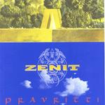

| Artist: | Zenit |
| Title: | Pravritti |
| Label: | CCD Records ZEN 7014 |
| Length(s): | 57 minutes |
| Year(s) of release: | 2001 |
| Month of review: | [05/2001] |
| 2) | Quello | 6.14 |
| 3) | Noman's Land | 5.58 |
| 4) | Il Cavaliere Rosso | 5.47 |
| 6) | Le Onde Del Tempo | 6.37 |
| 7) | Fragile | 3.56 |
| 8) | Alone | 3.38 |
Quello opens percussively, but we come to the playful vocal part. The Italian vocals are good, but not very melodic, more in a spoken fashion. The keyboards are quite accessible. In the middle part there is more of a jazzrock feel to the music as guitarist Di Sessa plays his rather sharp notes. The following meandering keyboard solo is quite slow. After some acoustic guitar, the music becomes uplifting with joyful tones on the keyboards. The somewhat waltzlike vocal part now returns supported by heavy rhythm guitars.
Noman's Land opens with bass rich playing and strongly in jazzy style. The vocal part is not as melodic as I would have liked, a bit too straightforwardly rocky. The band does not forget to include some more proggy influences with a quieter interlude, some loud keyboards, but the style continues to be quite jazzy, but also subtle in places as well.
The next one Il Cavaliere Rosso is not a very strong track. I don't mind the dreamy final part, but the vocal first part is not great. A bit too simple all of that. Icarus is the first track with English lyrics and opens as a rock track with catchy keyboards. Catchy rock then, with some string like passages as well, but to me it all sounds a bit weak. The atmospheric intermezzo does not help this time.
Between the latter track and Le Onde Del Tempo we hear some percussion, probably djembe's. Le Onde Del Tempo is back to Italian (and I think I prefer them that way). The music is a bit easy-going and again has some elegant acoustic guitar, playful and repetitive and the string like synths also rejoin us again. The music reminds me mostly of quality pop from the seventies in Italy. However, this only last two minutes, because then the organ and the guitar set in. The third part of the track, if we can call it that, features hammered, playful and somewhat jazzy piano. Then the vocals return against the backdrop of stringy synths.
Fragile, like most of the other tracks is written by Bernasconi. Fragile is the second track with English lyrics. The vocals are subdued as well as the playing. The song builds up really well this time with ever stronger keyboards in the back and some good vocal arrangements to make the song quite distinctive. The choir like keyboards remind me a bit of Cockney Rebel's Sebastian. Quite a mystery track.
Alone is an instrumental written by Di Sessa this time. It is mostly acoustic guitar and the main them reminds me a lot of For Absent Friends by the Dutch band For Absent Friends. That Di Sessa would know this track seems unlikely to me.
The title and final track is by far the longest. After a rather ordinary intro the progressive touches come into the music again with a soft tapestry of keyboards and melodic acoustic guitar. Rather mellow stuff, a bit in the style of Genesis. The following rhytmically varied part also reveals such influences. Then the keyboards turn for the catchy. Then we get some good progressive rock, and afterwards Thommen gets the lead with his bass guitar in a rather moody sounding interlude. The music then starts to build back up. The final part is a bit too playful I feel, a bit like live improv.